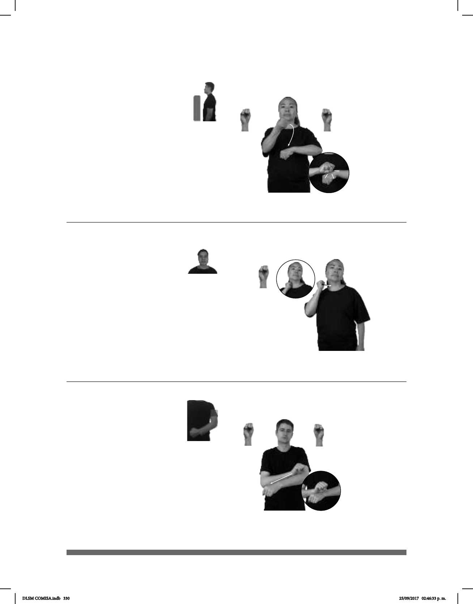

330
Seña: SB
MD y MB S.1
MD la palma inicia
hacia arriba y termina hacia abajo.
MB palma hacia abajo.
A la altura del pecho.
MD sobre MB.
La muñeca de la MD
se mueve formando un círculo y
después se apoya sobre la MB.
sust.f. Conjunto de
siete días consecutivos medido ya
sea de domingo a sábado o de lunes
a domingo.
SEMANA PASADA, pro-YO IR PLAZA UNIVERSIDAD
La semana pasada fui a Plaza Universidad.
(S-109)
(S-110)
Seña: SM
S.1
Palma hacia adentro.
Sobre el cuello.
La mano simula varios
saltos.
sust. Miembro de un
consejo legislativo o Senado. En México
es elegido por sufragio directo de los
ciudadanos de cada estado de la
Federación, a los que representa por un
periodo de seis años. Su función
principal es examinar las iniciativas de
ley que recibe de los diputados para su
____o.i.p.
SENADOR GASOLINA AUMENTAR
tope de precio
PORQUÉ pro-ÉL EXPLICAR
El senador explica por qué la gasolina está cara.
(S-111)
Seña: SB
MD y MB S.1
MD palma hacia
fuera, MB palma hacia abajo.
A la altura del pecho.
MD sobre el antebrazo de MB.
MD recto de
izquierda a derecha.
adj. Que no ofrece
EXPLICAR BIEN PERO SENCILLO
Explícame bien, pero de forma sencilla.
DLSM COMISA.indb 330 25/09/2017 02:46:33 p. m.